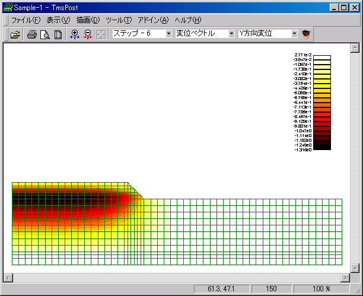
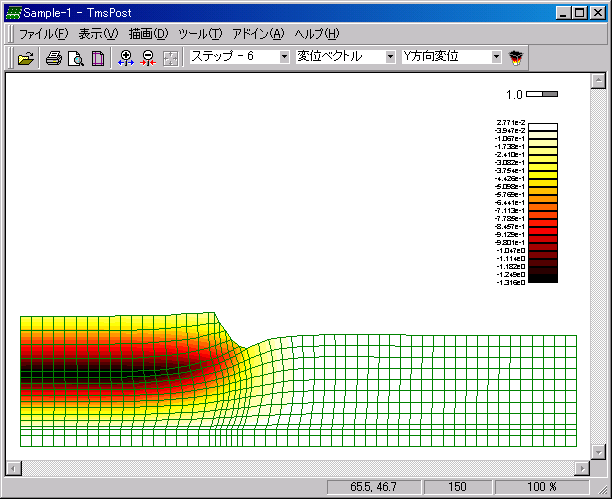
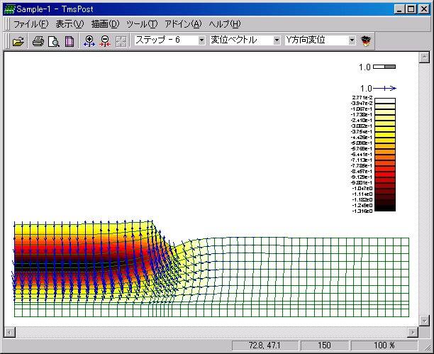
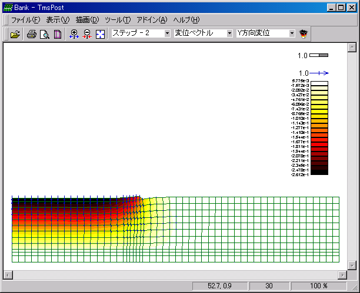

コンタ図、メッシュ変位図、ベクトル図の描画を行います。これらを組み合わせた描画方法の説明をします。
描画させたい計算結果のアイテムを指定しコンタ図を描画します。メイン画面メニューの[描画]−[コンタアイテム]−[Y方向変位]を選択すると、Y方向変位コンタ図が表示されます。

メッシュ変位を描画します。メイン画面メニューの[描画]−[変位スケール]−[1.0基準]を選択すると、図にメッシュ変位が付加されます。

ベクトルを描画します。メイン画面メニューの[描画]−[ベクトルスケール]−[1.0基準]を選択すると、図にベクトルが付加されます。ベクトルのアイテムはメイン画面メニューの[描画]−[ベクトルアイテム]から選択します。ベクトルアイテムは任意に作成することができます。詳細は「6-4-2.設定」−＜ベクトル図＞をご参照下さい。

任意ステップの計算結果を描画します。メイン画面メニューの[描画]−[ステップ]−[ステップ - 2]を選択すると、ステップ2の図が表示されます。
